The films
Eight films. One RAW.
The same unprocessed photo, developed in every look LUT Cam has. The looks come from a physical model of film and print, not from filters.
-
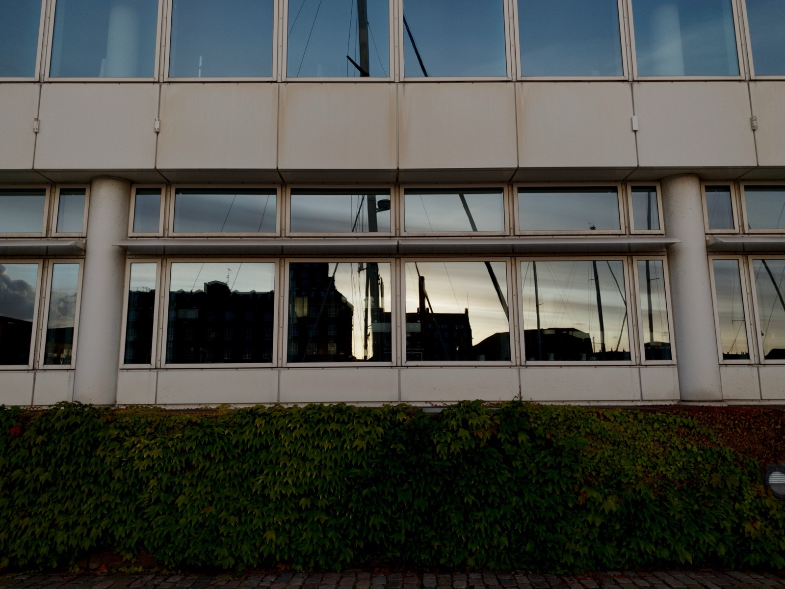
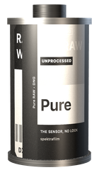
Pure
The sensor, no look
-

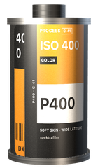
P400
Soft skin · wide latitude
-
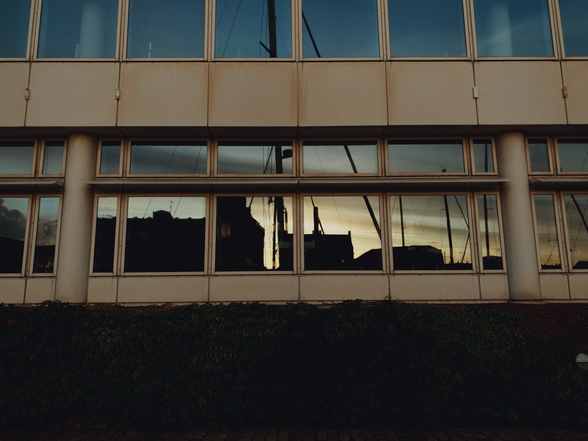
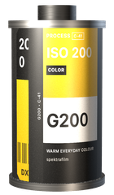
G200
Warm everyday colour
-
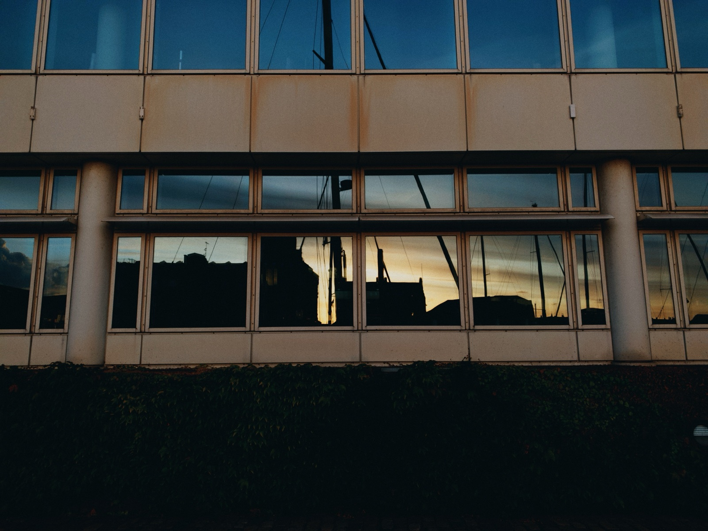
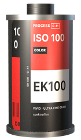
EK100
Vivid · ultra fine grain
-
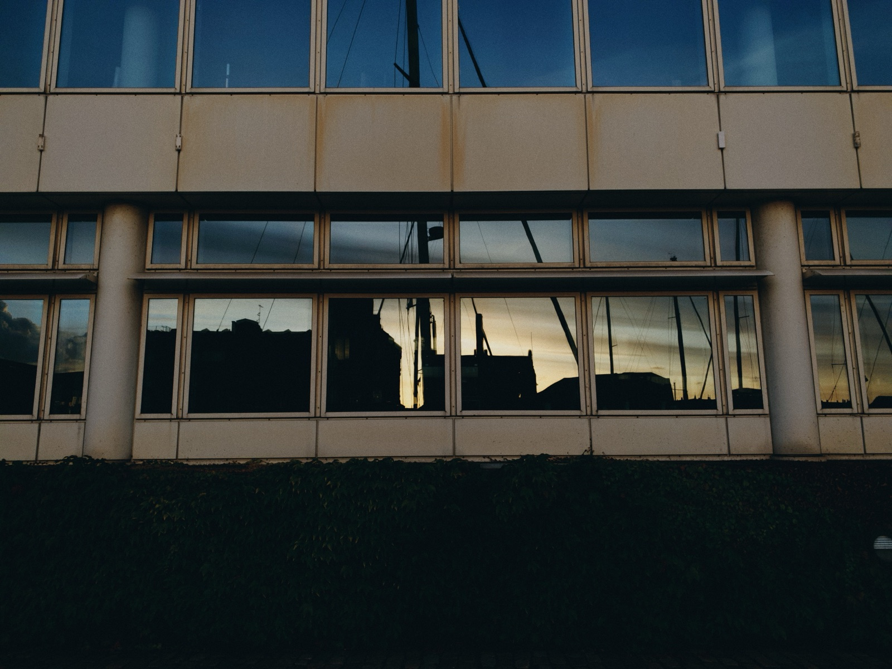
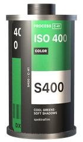
S400
Cool greens · soft shadows
-
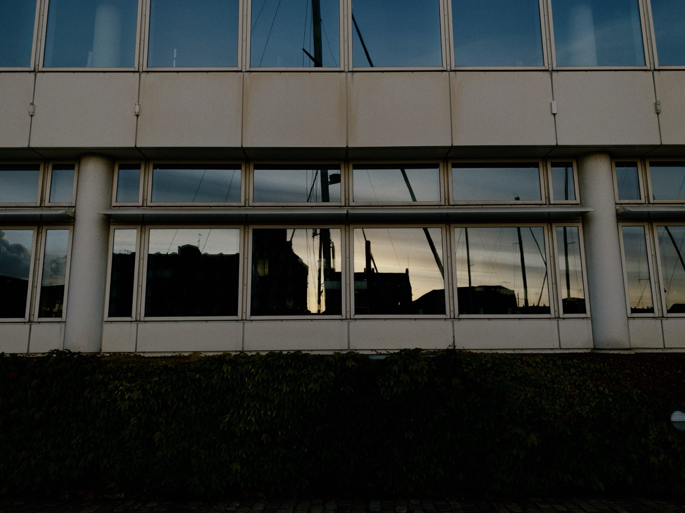
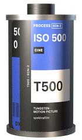
T500
Tungsten · motion picture
-
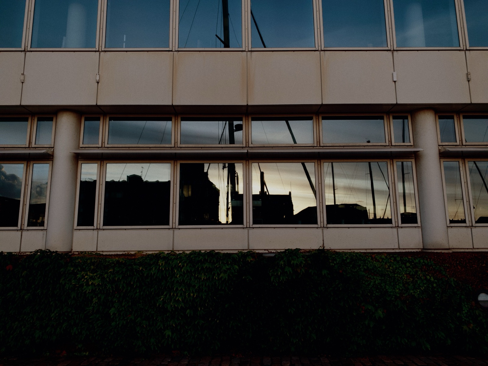

V100
Slide · deep saturated colour
-
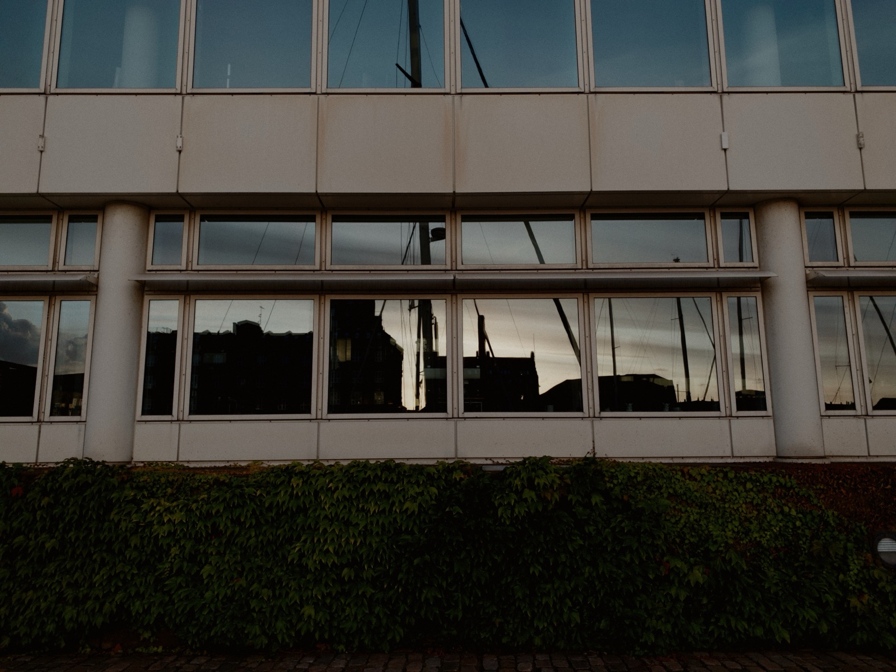

K64
Slide · the classic
-
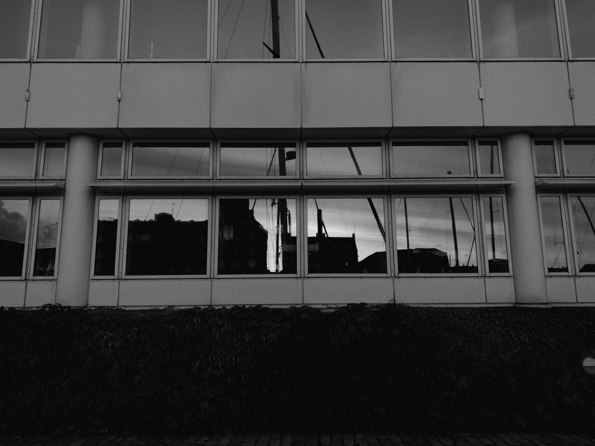
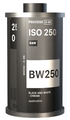
BW250
Black and white · cinema
Every picture is the same iPhone XS RAW (1/450 s, ƒ1.8, ISO 25), developed by LUT Cam's own engine with each film's grain. In the app you can change the film, its strength and its grain after the shot.